Çamardı ve Demirkazık Dağı
Niğde’nin şirin ilçesi Çamardı, geniş alanlara yayılmış elma ağaçları, içinden akan buz gibi suları ve hemen yanı başında yükselen Demirkazık dağı ile tam bir gezi ve dinlenme mekanı. İlçenin Kayseri’ye uzaklığı yaklaşık 160 km, fakat Orhaniye – Kovalı – Yahyalı – Develi güzergahını kullanarak yolu 110 km’ye kadar düşürmek mümkün. Çamardı – Pozantı arasının sadece 45 km olduğunu da not düşmek isterim.
İlçenin sembolü olan Demirkazık dağı, dağcıların da uğrak mekanı olarak bilinmektedir. Demirkazık dağı eteklerinde dağcıların konforlu bir kamp yapabilmeleri için bir otel bulunmaktadır. Yine Demirkazık dağının kamp yapmak için çok uygun düzlüklere sahip olduğunu da ifade etmeliyim. Özellikle Mayıs – Haziran aylarında Yedigöller, Hacer ormanları ve Kapuzbaşı şelalelerine kadar uzayan tabiat yürüyüşleri yapmak mümkün. Bölgede yaban keçisi, kurt, ayı vb vahşi hayvanlara rastlamak olası. Demirkazık dağının eteklerinde bir de anıt mezar yer alıyor, Demirkazık’a tırmanırken vefat eden dağcıların mezarları burada yer alıyor.
Çamardına gitmiş iken tatlı yememek olmaz, bölgenin tatlıları enfes ve meşhur. Özellikle halka tatlının doğduğu yer burasıdır ve Çamardılı tatlı ustaları İstanbul’da çok sayıda tatlı işletmesi işletmektedirler.
Çamardında yetişen alabalıkların oldukça lezzetli olduğunu belirtelim. Bölgede birkaç tane alabalık çiftliği var, biz gezimiz esnasında toprak havuzlu Dönmez Alabalık Tesislerine gittik, balığın tanesini 2 TL’den satıyorlar ve büyükçe bir tesisleri var, dilerseniz piknik bile yapabilirsiniz. Tesise 0388 724 72 85 – 0542 821 09 48 numaralı telefonlardan ulaşabilirsiniz.
Çamardında geniş alanlara yayılmış çok sayıda elma bahçesi var, elması sert ve tatlı oluyor, tadına bakmanızı tavsiye ederim.
Piknik yapmak, temiz havayı ciğerlerinize doldurmak, lezzetli tatlılar ve alabalık yemek için Çamardı doğru adres.
Niğde’nin incisi Çamardı ilçesini harita üzerinde görmek için tıklayınız.
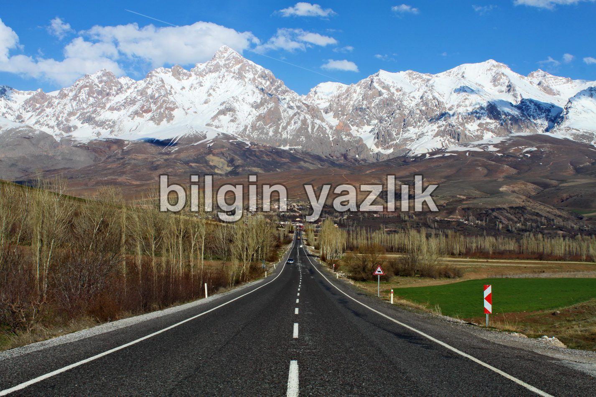
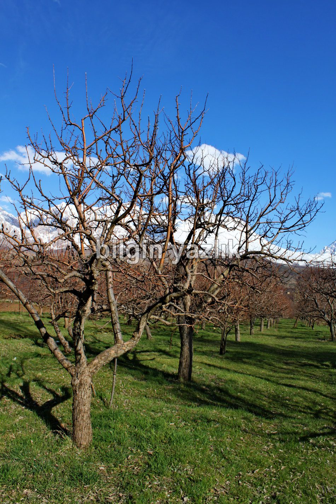
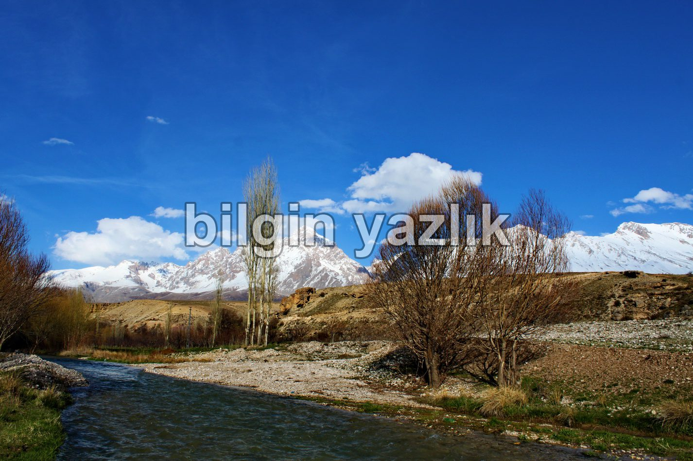
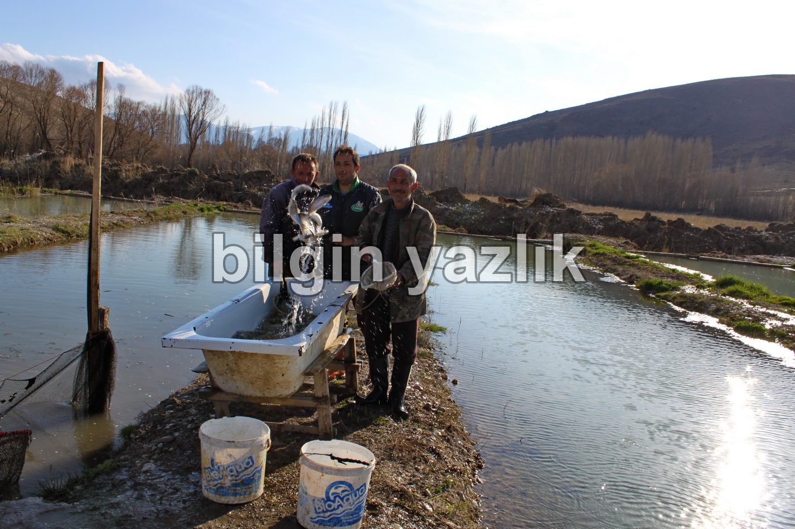
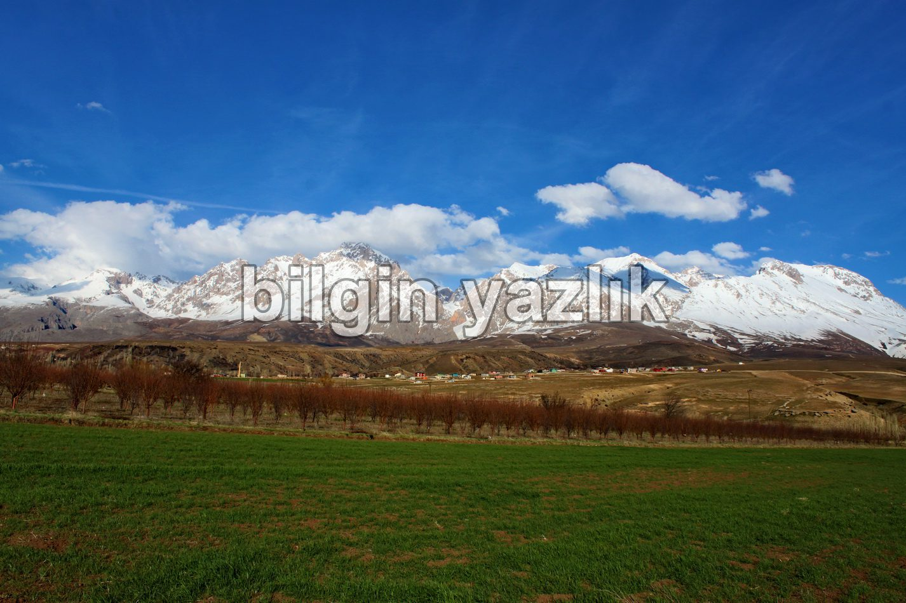
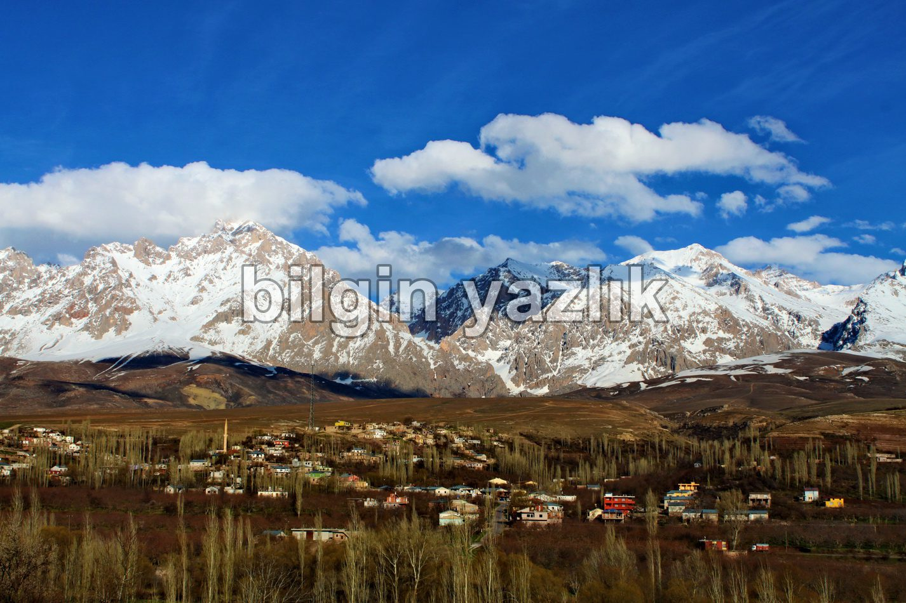
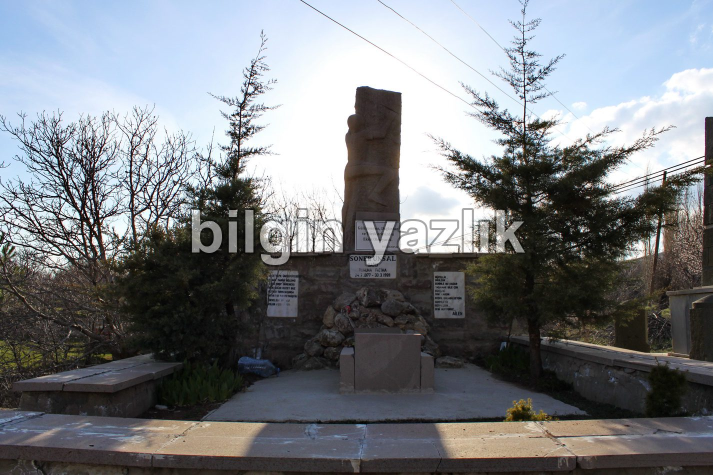
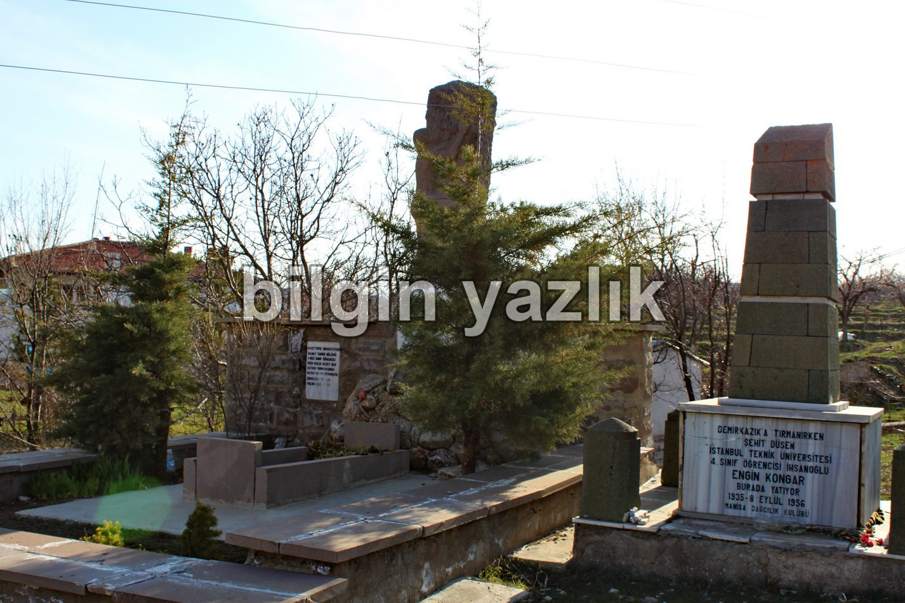
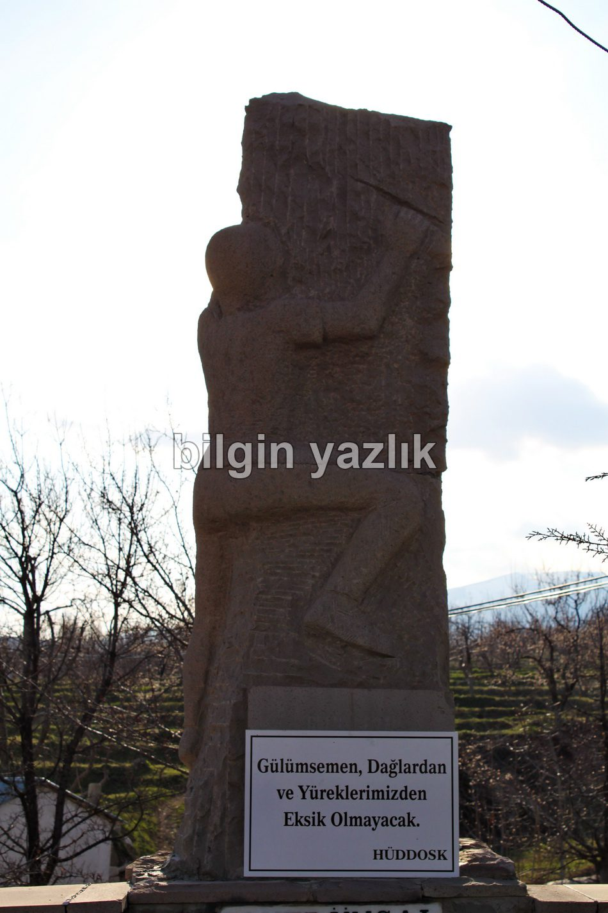
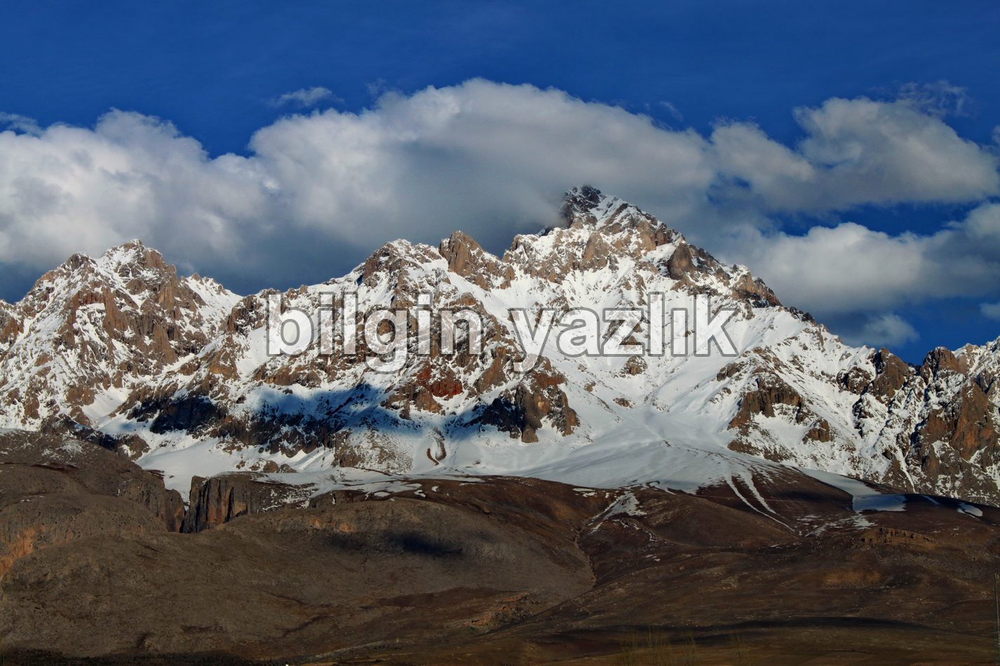
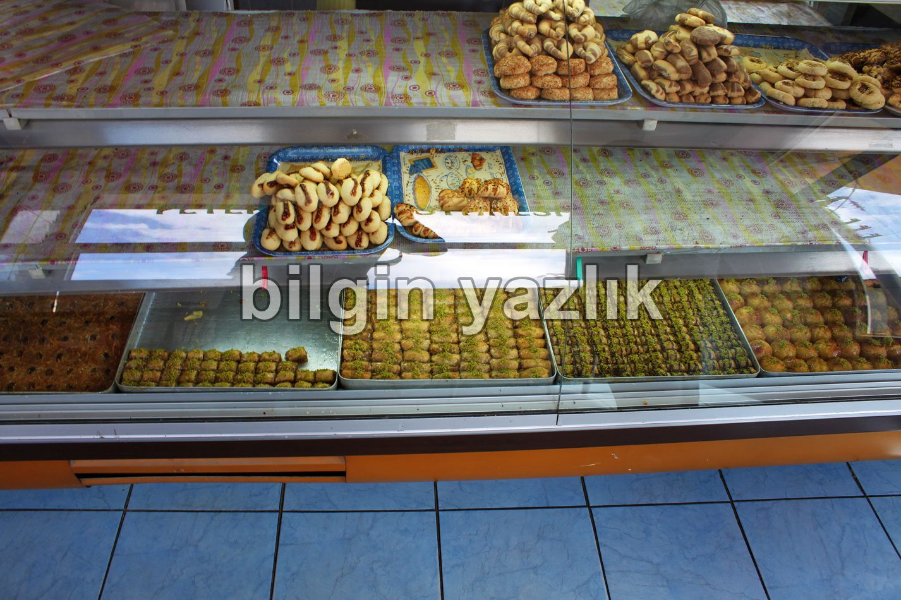
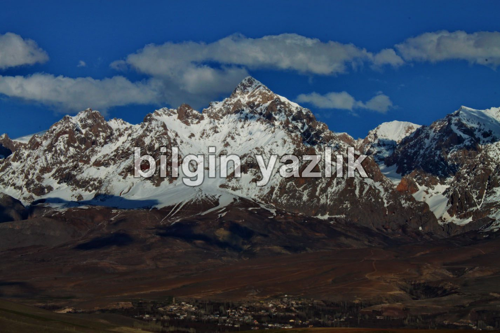
Bu yazı taliyol arşivinden taşınmıştır. · özgün kayıt